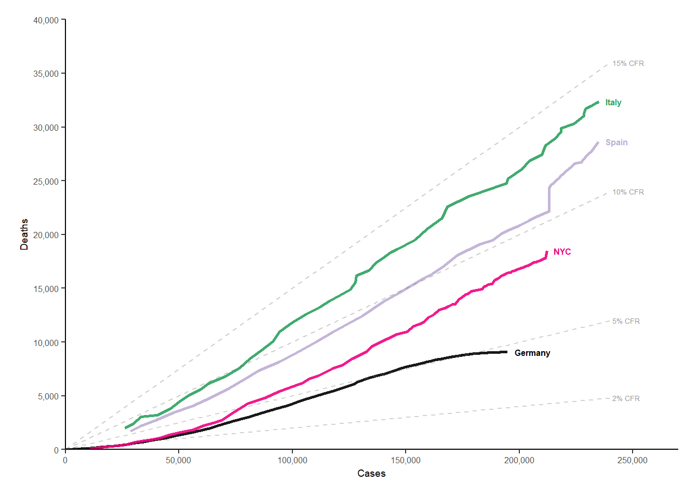

Part 1
Link to the study: https://pubmed.ncbi.nlm.nih.gov/30909941/
| Category | Score |
|---|---|
| Study_purpose | TRUE |
| Data_availability_statement | TRUE |
| Data_location | TRUE |
| Study_location | TRUE |
| Author_review | 7 |
| Ethics_statement | TRUE |
| Funding_statement | TRUE |
| Code_availability | FALSE |
In this study, researchers investigated ticks removed from their pets for identification and pathogen testing. Geographical coordinates of ticks removed from dogs or cats were registered onto a map of the Netherlands. A barcode was assagned to each tick for the easy tracking of each submission to the laboratory for taxonomic identification. DNA was extracted and PCR amplified, subjected to reverse line blot hybridization (RLB) and screened for a broad range of tick-borne pathogens. The goal of this study was to identify hotspots for ticks and tick-borne pathogens and provide an early warning system for exotic ticks invading the Netherlands.
Part 2
link to the study: https://osf.io/vdgwt/
code is very easy to acces and read.
recreating figure 1
# Load data
db_gh <- read_csv("data_Raw/002_open_peer_review/COVID_data_peer_review.csv")## Rows: 13651 Columns: 9
## ── Column specification ──────────────────────────────────────────────────────────────────────────────────────────────────────────────────────────────────────────────────────
## Delimiter: ","
## chr (5): Country, Region, Code, Date, Sex
## dbl (4): Age, AgeInt, Cases, Deaths
##
## ℹ Use `spec()` to retrieve the full column specification for this data.
## ℹ Specify the column types or set `show_col_types = FALSE` to quiet this message. # Filter date
db_gh$Date <- as.Date(db_gh$Date,"%d.%m.%y")
db_gh2 <- db_gh %>% filter(Date<=as.Date("30.06.2020","%d.%m.%y"))
# Set New York as "country" (easier handling)
db_gh2$Country[db_gh2$Country=="USA" & db_gh2$Region == "NYC"] <- "NYC"
# Sum data over age groups
db_gh2 <- db_gh2 %>%
filter(!Country %in% c("China","USA","South Korea") & Sex == "b") %>%
group_by(Country, Code,Date) %>%
summarise(Cases = sum(Cases),
Deaths = sum(Deaths))## `summarise()` has grouped output by 'Country', 'Code'. You can override using the `.groups` argument. # Exclude bolletino
db_gh2 <- db_gh2 %>%
filter(str_sub(Code, 1, 5) != "ITbol")
# Sort by date
db_gh2 <- db_gh2 %>% group_by(Country) %>% arrange(Date)
# Smooth reporting issues cases
for(country in unique(db_gh2$Country)) {
days <- db_gh2$Date[db_gh2$Country==country]
for(day in 2:length(days)) {
current <- db_gh2$Cases[db_gh2$Country==country & db_gh2$Date==days[day]]
previous <- db_gh2$Cases[db_gh2$Country==country & db_gh2$Date==days[day-1]]
if(current<previous) db_gh2$Cases[db_gh2$Country==country & db_gh2$Date==days[day]] <- previous
}
}
# Smooth reporting issues deaths
for(country in unique(db_gh2$Country)) {
days <- db_gh2$Date[db_gh2$Country==country]
for(day in 2:length(days)) {
current <- db_gh2$Deaths[db_gh2$Country==country & db_gh2$Date==days[day]]
previous <- db_gh2$Deaths[db_gh2$Country==country & db_gh2$Date==days[day-1]]
if(current<previous) db_gh2$Deaths[db_gh2$Country==country & db_gh2$Date==days[day]] <- previous
}
}
# Set colors
col_country <- c("Germany" = "black",
"Italy" = "#2ca25f",
"NYC"="#f0027f",
"Spain"="#beaed4",
"South Korea"="#fdc086")#,
#"USA"="#386cb0")
cols <- c("black",
"#2ca25f",
"#f0027f",
"#beaed4",
"#fdc086")#,
#"#386cb0")
# Axis
labs <- db_gh2 %>%
group_by(Country) %>%
filter(Cases == max(Cases)) %>%
mutate(Cases = Cases + 3000)
# Including all reports
tx <- 6
lim_x <- 240000
db_gh2 %>%
ggplot(aes(Cases, Deaths, col = Country))+
geom_line(size = 1, alpha = .9)+
scale_x_continuous(expand = c(0,0), breaks = seq(0, 300000, 50000), limits = c(0, lim_x + 30000), labels = comma)+
scale_y_continuous(expand = c(0,0), breaks = seq(0, 40000, 5000), limits = c(0, 40000), labels = comma)+
annotate("segment", x = 0, y = 0, xend = lim_x, yend = lim_x * .02, colour = "grey40", size = .5, alpha = .3, linetype = 2)+
annotate("segment", x = 0, y = 0, xend = lim_x, yend = lim_x * .05, colour = "grey40", size = .5, alpha = .3, linetype = 2)+
annotate("segment", x = 0, y = 0, xend = lim_x, yend = lim_x * .10, colour = "grey40", size = .5, alpha = .3, linetype = 2)+
annotate("segment", x = 0, y = 0, xend = lim_x, yend = lim_x * .15, colour = "grey40", size = .5, alpha = .3, linetype = 2)+
annotate("text", label = "2% CFR", x = lim_x + 1000, y = lim_x * .02,
color="grey30", size = tx * .3, alpha = .6, hjust = 0, lineheight = .8) +
annotate("text", label = "5% CFR", x = lim_x + 1000, y = lim_x * .05,
color="grey30", size = tx * .3, alpha = .6, hjust = 0, lineheight = .8) +
annotate("text", label = "10% CFR", x = lim_x + 1000, y = lim_x * .10,
color="grey30", size = tx * .3, alpha = .6, hjust = 0, lineheight = .8) +
annotate("text", label = "15% CFR", x = lim_x + 1000, y = lim_x * .15,
color="grey30", size = tx * .3, alpha = .6, hjust = 0, lineheight = .8) +
scale_colour_manual(values = cols)+
geom_text(data = labs, aes(Cases, Deaths, label = Country),
size = tx * .35, hjust = 0, fontface = "bold") +
theme_classic()+
labs(x = "Cases",
y = "Deaths")+
theme(
panel.grid.minor = element_blank(),
legend.position = "none",
plot.margin = margin(5,5,5,5,"mm"),
axis.text.x = element_text(size = tx),
axis.text.y = element_text(size = tx),
axis.title.x = element_text(size = tx + 1),
axis.title.y = element_text(size = tx + 1)
)
The population-level case-fatality rate (CFR) associated with COVID-19 varies substantially, both across countries at any given time and within countries over time. in this study the contribution of two key determinants of the variation in the observerd CFR: the age-structure of diagnosed infection cases and age-specific case-fatality rates were analyzed.
The code was very easy to reproduce, so I give it a 5. I did not need to change anything to get the graph I selected.